WIKA Model 101.00
Bourdon tube pressure gauge, copper alloy
Danh mục đầy đủ thiết bị đo WIKA chính hãng do Fast Group Engineering cung cấp: áp suất, nhiệt độ, mức, lưu lượng, lực, hiệu chuẩn.
Bourdon tube pressure gauge, copper alloy

Bourdon tube pressure gauge, copper alloy

Bourdon tube pressure gauge, copper alloy

Bourdon tube pressure gauge

Bourdon tube pressure gauge, copper alloy

Liquid filled gauge

Test gauge, copper alloy

Stopcock for pressure measuring instruments

Pressure gauge valve

Pressure gauge snubber

Gauge adapter

Syphons and connecting pipes

Flushing ring

Diaphragm seal with threaded connection
Diaphragm seals

Diaphragm seal with flange connection

Diaphragm seal with threaded connection

Diaphragm seal with flange connection

Pressure sensor A-10

Pressure sensor with IO-Link

Differential pressure gauge Eco

Differential pressure sensor

Precision digital pressure gauge

Differential pressure gauge with micro switches

Differential pressure gauge with output signal

Differential pressure switch

Differential pressure transmitter

Pressure gauge per EN 837-1 with mounted diaphragm seal

High-quality pressure sensor with mounted diaphragm seal

Pressure gauge per EN 837-1 with mounted diaphragm seal

High-quality pressure sensor with mounted diaphragm seal

Differential pressure switch

Pressure sensor HP-2

High-pressure connection adapters and couplings

High-pressure ball valve

High-pressure check valve

High-pressure fittings and accessories

High-pressure needle valve

Pressure sensor IS-3

Needle valve and multiport needle valve

Block-and-bleed valve

Monoflange

Diaphragm pressure switch, flameproof enclosure Ex d

Thermomanometer

Pressure sensor MG-1

OEM pressure sensor

Diaphragm pressure switch

OEM pressure transmitter

Piping ball valve, split body design

Compact pressure switch, flameproof enclosure Ex d

Compact pressure switch

Bourdon tube pressure gauge with switch contacts

Bourdon tube pressure gauge with switch contacts

Bourdon tube pressure gauge with output signal

Bourdon tube pressure gauge with output signal

OEM pressure measuring system

OEM pressure measuring system with output signal

OEM pressure sensor

Electronic pressure switch

OEM pressure switch with display

Pressure switch

Pressure switch, heavy-duty version

Pressure switch, high adjustability of switch differential

Compact pressure switch

Compact pressure switch

Miniature pressure switch, stainless steel

Pressure sensor R-1

Flush pressure sensor

Pressure sensor S-20

Pressure sensor SA-11

Bimetal thermomanometer Eco

Bimetal thermomanometer

Bourdon tube pressure gauge, copper alloy

Bourdon tube pressure gauge, copper alloy or stainless steel

Bourdon tube pressure gauge, stainless steel

Bourdon tube pressure gauge, stainless steel

Diaphragm pressure gauge

Absolute pressure gauge, stainless steel

Capsule pressure gauge, stainless steel

Differential pressure gauge

Differential pressure gauge

Differential pressure gauge

Process transmitter

Differential pressure switch

Pressure sensor with flameproof enclosure

Monoblock

Monoblock

Monoblock

Process transmitter

Valve manifold for differential pressure measuring instruments
Valve manifold for differential pressure measuring instruments

Pressure sensor P-30, P-31

Bourdon tube pressure gauge with switch contacts

Bourdon tube pressure gauge with electrical output signal

Bourdon tube pressure gauge with wireless transmission

Process transmitter
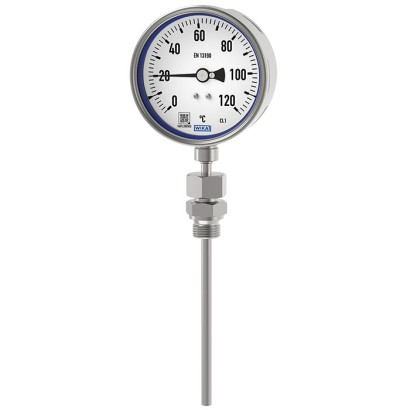
Bimetal thermometer
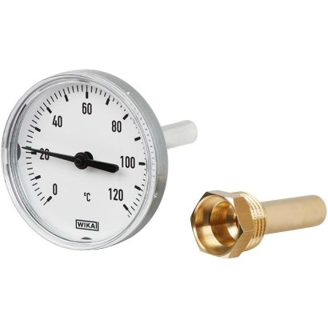
Bimetal thermometer
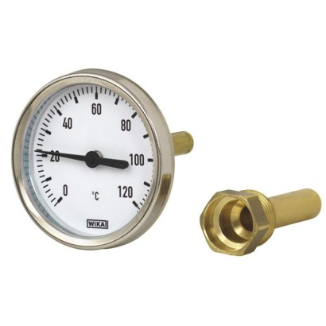
Bimetal thermometer
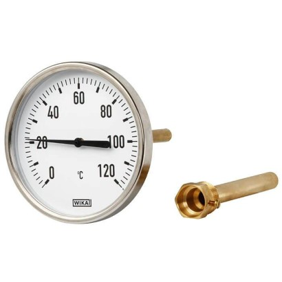
Bimetal thermometer
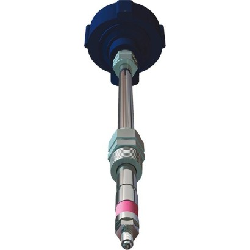
Flame rod
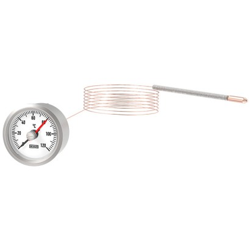
Expansion thermometer
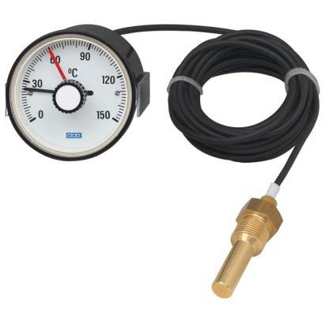
Expansion thermometer with microswitch
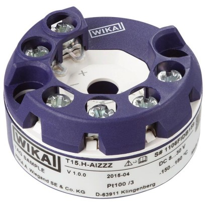
Digital temperature transmitter
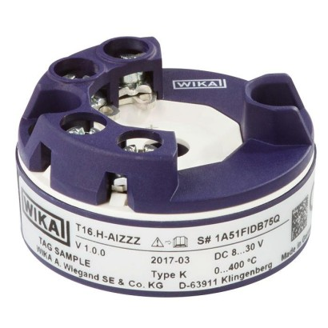
Digital temperature transmitter
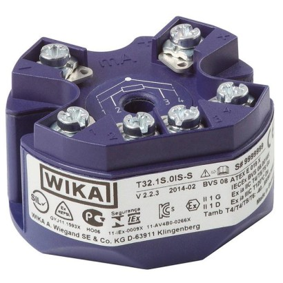
Digital temperature transmitter
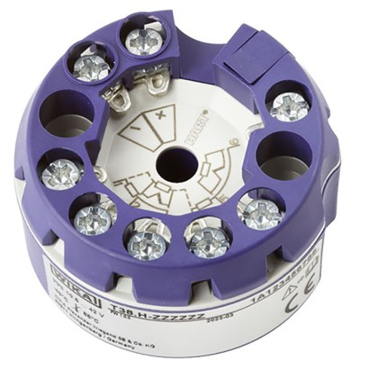
Digital temperature transmitter
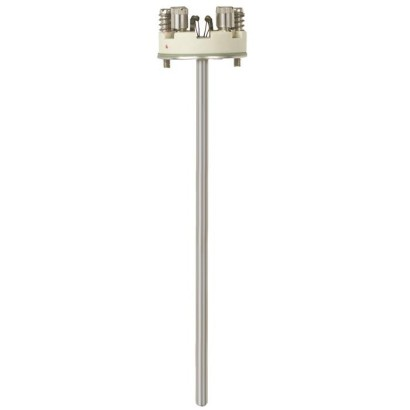
Measuring insert
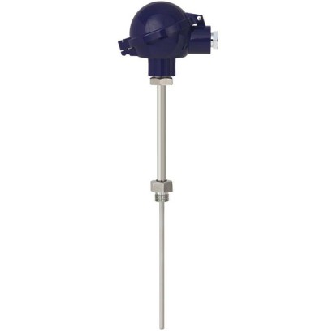
Thermocouple
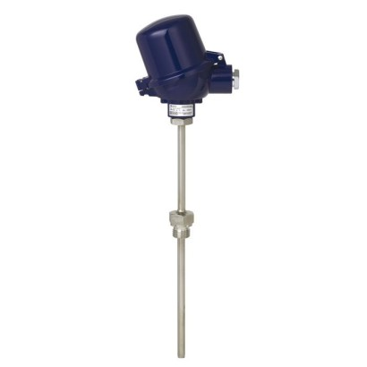
Threaded thermocouple
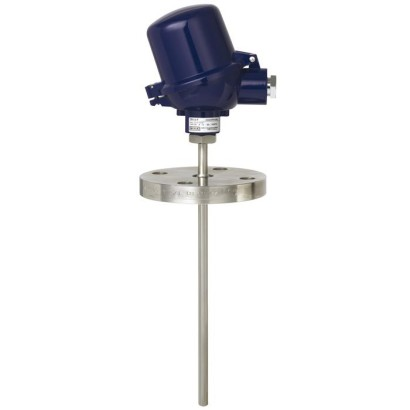
Flanged thermocouple
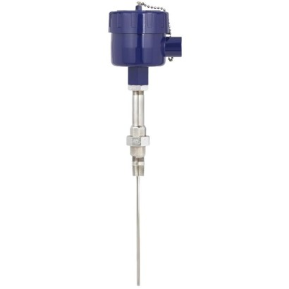
Thermocouple
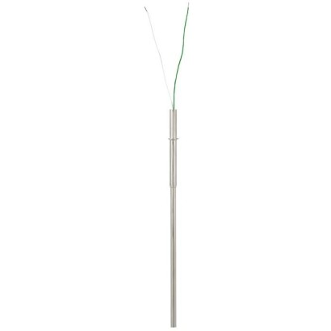
Measuring insert for process thermocouple
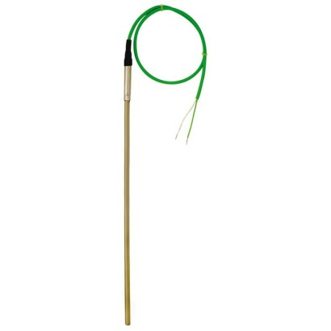
Cable thermocouple
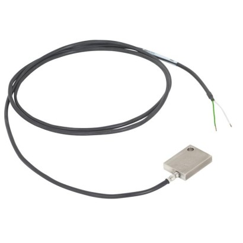
Surface thermocouple
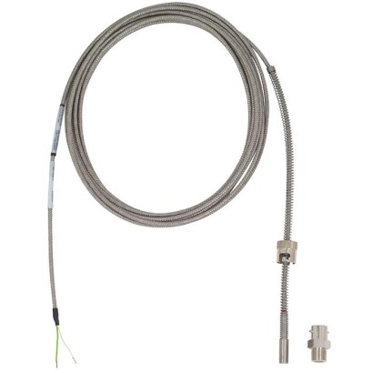
Bayonet thermocouple
Tubeskin thermocouple assembly
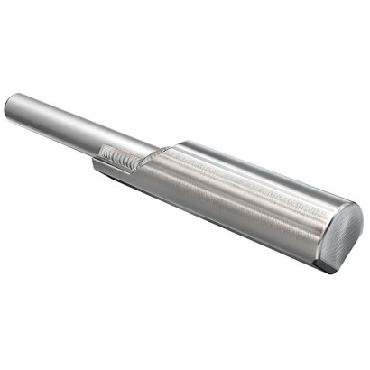
Tubeskin thermocouple
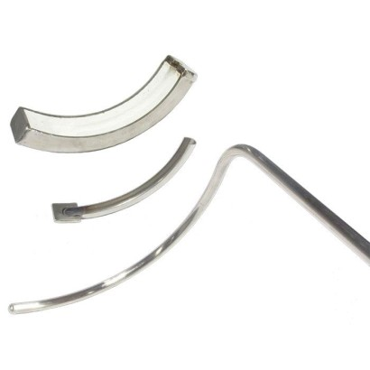
Tubeskin thermocouple assembly

High-temperature thermometer
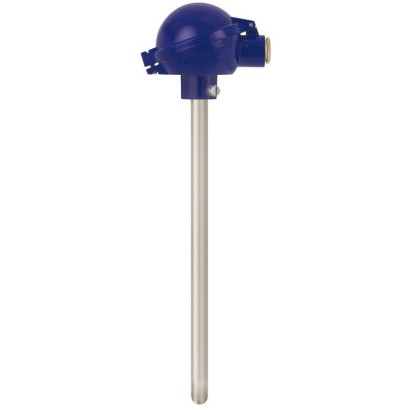
Thermocouple for flue gas temperature measurements
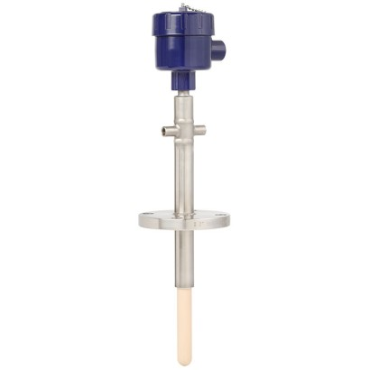
High-temperature thermocouple
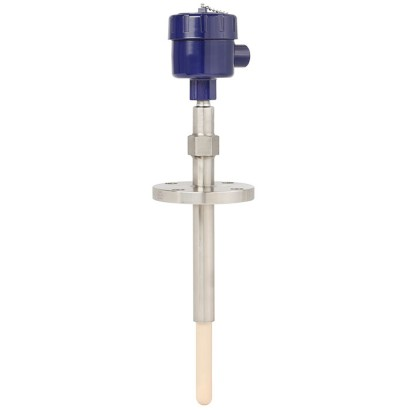
Sapphire-design thermocouple
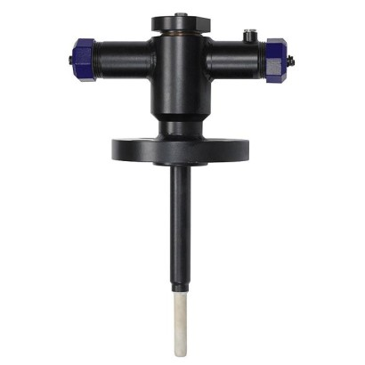
Sapphire-design thermocouple
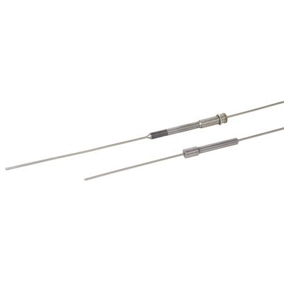
High-pressure thermocouple
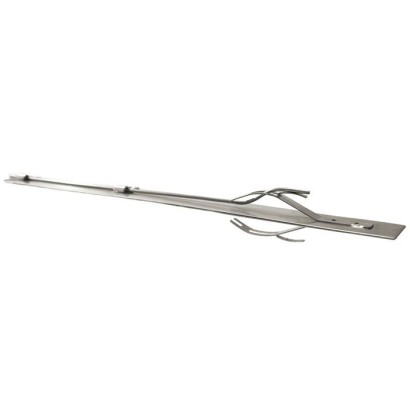
Multipoint thermocouple in band design
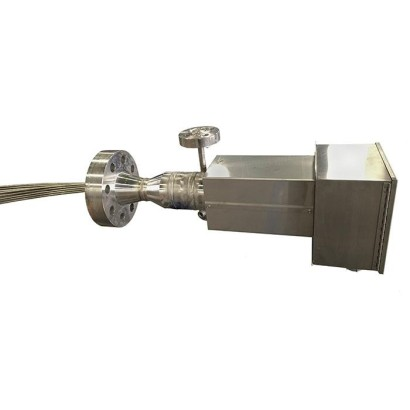
Flexible multipoint thermometer
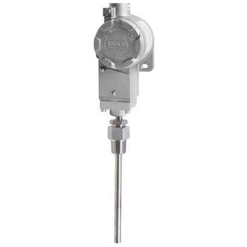
Compact temperature switch, flameproof enclosure Ex d
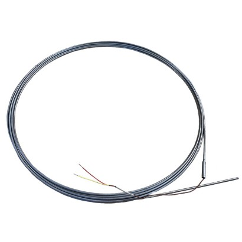
Linear sensor for hot spot detection
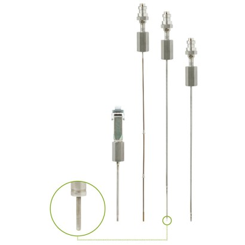
Thermocouple for civil nuclear applications

Compact temperature switch
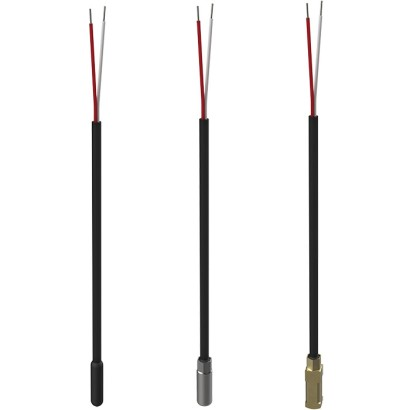
Cable temperature probe

Threaded temperature probe
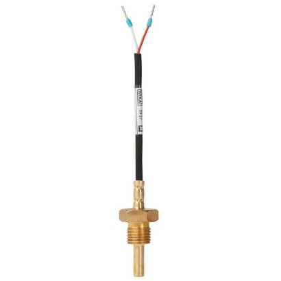
Threaded temperature probe

Outdoor thermometer

Strap-on temperature sensor
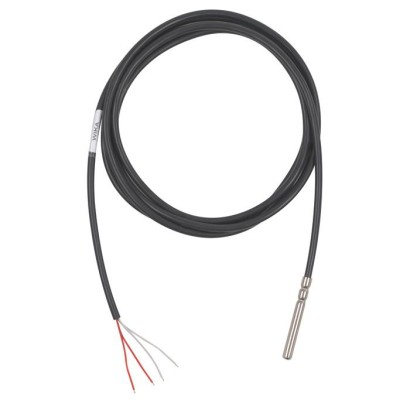
Insertion thermometer
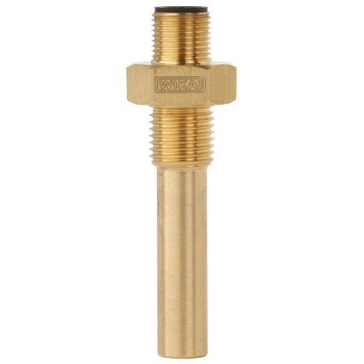
Bimetal temperature switch
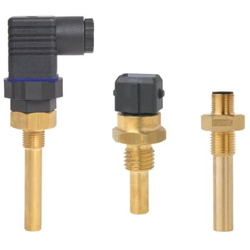
Temperature switch
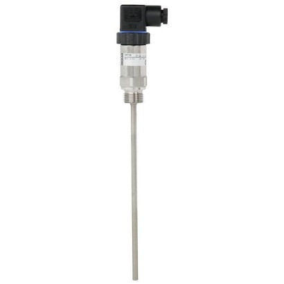
Threaded thermometer
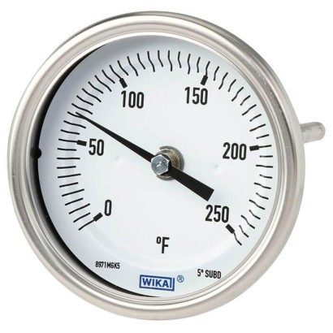
Bimetal thermometer
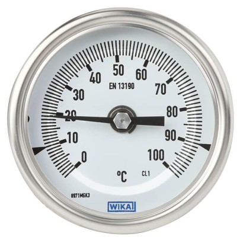
Bimetal thermometer
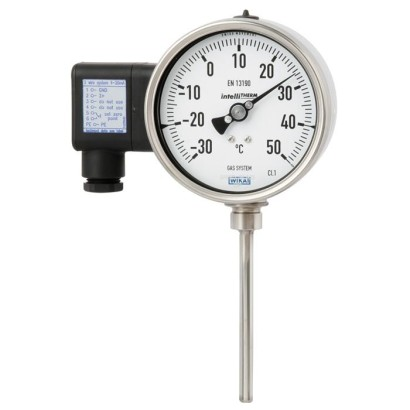
Gas-actuated thermometer with electrical output signal
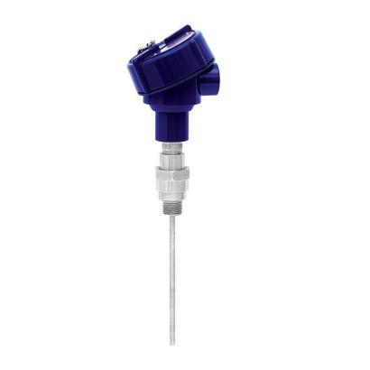
Resistance thermometer

Measuring insert
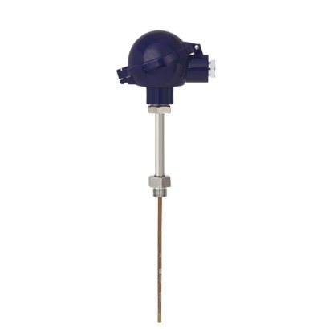
Resistance thermometer
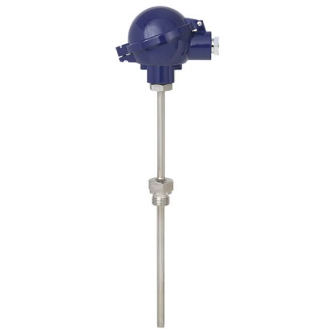
Threaded resistance thermometer
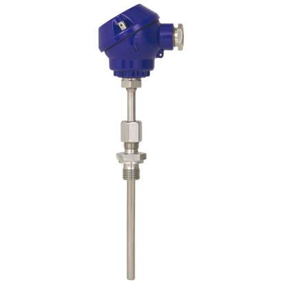
Threaded resistance thermometer
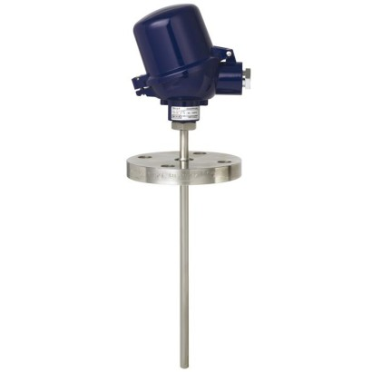
Flanged resistance thermometer
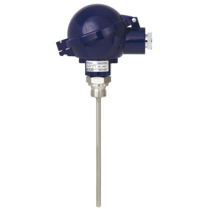
Resistance thermometer
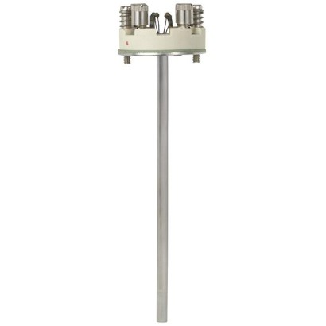
Measuring insert
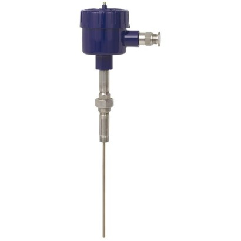
Resistance thermometer
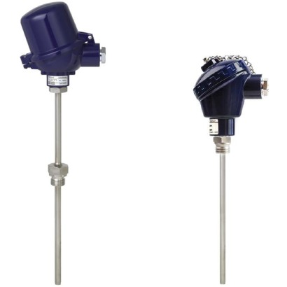
Threaded resistance thermometer
Measuring insert
Miniature resistance thermometer
Resistance thermometer

Miniature resistance thermometer
Miniature resistance thermometer
Cable resistance thermometer

Cable resistance thermometer
Bayonet resistance thermometer
Resistance thermometer

Resistance thermometer for civil nuclear applications
Electronic temperature switch with display
Thermowell with flange
Threaded thermowell
Threaded protection tube
Protection tube
Flanged, threaded and weld-in protection tube
Protection tube
Bimetallic thermometer
Process thermocouple
Expansion thermometer
Process resistance thermometer
Flexible multipoint thermometer for pipewells

Magnetic switch

Bypass level indicator
Level indicators

External chamber

Level switch

Magnetostrictive level transmitter

Reed level transmitter

Reed level transmitter

Float switch

Float switch

Radar sensors

Submersible pressure sensor

Glass level gauge

Level sensor with reed measuring chain

Optoelectronic level switch

Optoelectronic level switch

Optoelectronic level switch

Float switches
Float switch

Float switch

Float switch

Suspended float switch

Reed-chain level sensor

Reed-chain level sensor

Magnetostrictive level transmitter

Optoelectronic level switch and switching amplifier
PID controller
Air flow meter
Measuring probe
Electromagnetic flow meter
Flow meter
Electromagnetic flow meter
Hybrid signal converter

Compact orifice plate
Cone flow meter
HHR FlowPak® flow meter
HHR ProPak™ flow meter for oil and gas
Meter run / meter tube
Ultrasonic flow meter
Electronic flow switch with display
Flow switch

Analogue cable amplifier

Industrial mV/V measuring instrument

Electronics

Strain gauge weighing electronics

Digital limit switch

Safety electronics

Hydraulic compression force transducer

Compression force transducer with strain gauge

Compression load cell

Tension/compression force transducer with strain gauges

Tension/Compression force transducer with strain gauges

Tension/compression force transducer

Tension/compression force transducer

Miniature tension/compression force transducer

Tension/compression force transducer

Shear beam

Bending beam
Load cells

Wire rope force transducer up to 40 t

Strain transducer

Chain hoist test set

Test set for measurement of electrode forces

Inclination sensor

Inclination sensor

Inclination sensor

Tension/compression force transducer

Shear beam
Load pins

Load pin

Load pin

Tension links
Tension link

Wire rope force transducer

Standard reference resistor

Dead-weight tester

Dead-weight tester

Dead-weight tester

Pressure balance

Pressure controller

Pressure controller

Digital dead-weight tester

Precision pressure measuring instrument

Portable process calibrator

Portable multi-function calibrator

Hydraulic comparison test pump

Pneumatic hand test pump

USB pressure sensor

Analogue pressure transducer

Micro calibration bath

Temperature dry-well calibrator

Temperature dry-well calibrator

Temperature dry-well calibrator

Hand-held thermometer

Hand-helds

Reference thermometer

Reference thermometer

Precision thermometer

DC resistance thermometry bridge

AC resistance thermometry bridge

Primary-standard resistance thermometry bridge

Calibration software

Precision pressure transducer

Hand-held thermometer

Standard thermometer
Analytic instrument for SF6 gas and alternative insulating gases
Transmitter
Precision digital gas density indicator
Gas density monitor with reference chamber
Gas detector

SF6 gas cart
Measurement technology for the iron and steel industry
Linear drives
Curing presses
Chillers
Rooftops
Heat pumps
Machine tools
Heating systems
Filter systems
Wind turbines

IIoT products

Bourdon tube pressure gauge